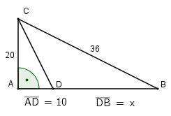

Pythagoras Aufgabe 10 Berechnen Sie x in mm.  Satz von Pythagoras im Dreieck ABC: BC2 = AB2 + AC2 |-AC2 AB2 = BC2 - AC2 AB2= 362 mm2 - 202 mm2 = 896 mm2 |√ AB = 896mm2 = 29,9 mm DB = x = AB - AD = 29,9 mm - 10 mm = = 19,9 mm
Pythagoras Aufgabe 10 Berechnen Sie x in mm.
